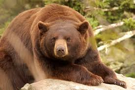
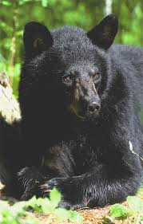
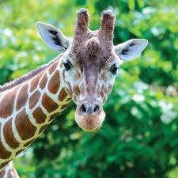
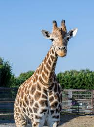
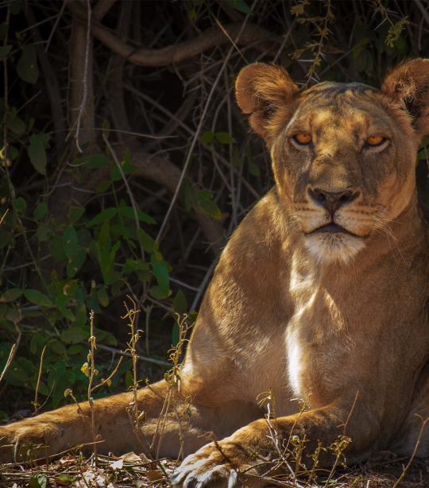
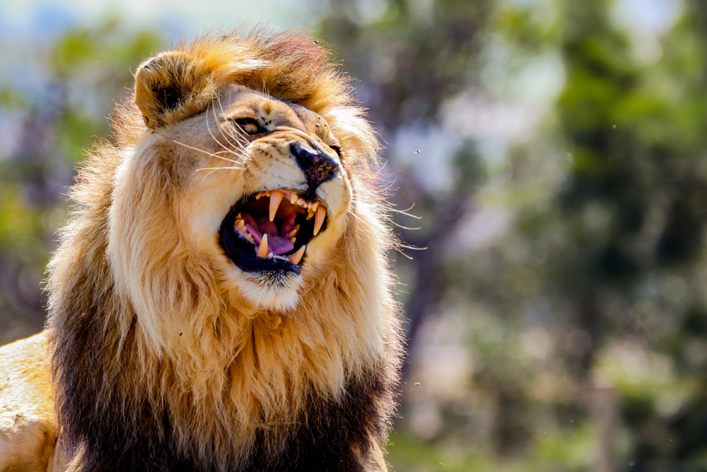
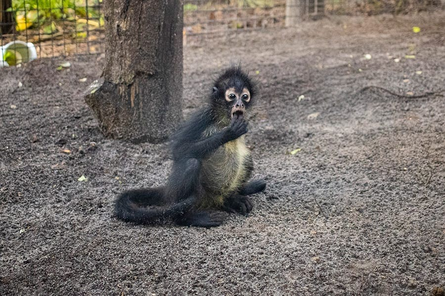
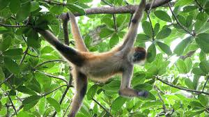
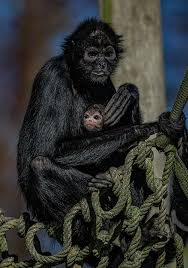
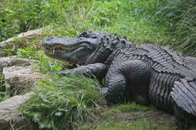

Bears
Black bears are a species of bear found in Colorado. They are a
multitude of colors ranging from blond to cinnamon to dark brown.
Females are normally smaller than males, but both look very large. They
are wary of people and normally avoid society. For more detailed
information check out
Colorado State Wildlife.
- Ollie

Young Female, cinnamon colored, 175 lbs, favorite food - fresh
rasberries
- Mona

Young Female, brown colored, 165 lbs, favorite food - fresh
gooseberries
Giraffes
Giraffes are the worlds tallest animals found only in sub-Saharan Africa
in the wild. Their natural habitat are open grasslands. They live in
small family groups and have crazy long tongues. For more detailed
information check out
National Geographic.
- Frankie

The jokester of the bunch. Will lick you if you give him the chance.
- Coconut

Likes to be with the group, will hangout in the background and observe
the shenanigans of Frankie.
Lions
Lions are one of the largest cats. They are an apex predator and are
most active and night. Their habitat is reduced, but they used to range
across much of Europe, Asia and Africa. For more detailed information
check out
Britannica.
- Mella

Mella likes to chase her tail and any unlucky prairie dogs that find
their way into her habitat.
- Karl

Karl likes to steal Mella's prairie dog catch and then roar about how
scrawny it is.
Monkeys
Spider Monkeys live in groups and have long thin arms. The don't have
opposable thumbs, but do have fabulous tails. For more information check
out
Kids National Geographic.
- Cookie

Cookie is bright shiny new and finding his legs.
- Earl

Earl likes hanging out in the canopy and dropping twigs on
unsuspecting passers by.
- Banana Pudding

Banana Pudding is the group mom taking care of anybody who needs a
little snuggle.
Alligators
What can I say, I'm not a crocodile. American alligators are only found
in the US and can grow to be larger than 12ft long. For more information
check out
National Wildlife Federation.
- Wren

Wren is a little nervous - keep your fingers safe while feeding her.
- Aspen

Aspen is a lovely gentle alligator.
- Milka

Milka likes to say hi. Very happy to receive any tasty treat you care
to share.